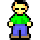
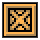
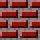
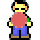

游戏元素：

人

箱子
目标点

墙

人在目标点
箱子在目标点
空白
游戏目标：移动小人，将箱子推至目标点，当所有箱子均被推至目标点时本关卡游戏完成
移动规则：当小人前方没有墙壁或箱子，小人可以移动；当小人前方有墙壁，小人不能移动；当小人前方有箱子，并且箱子前方没有墙壁或箱子，小人能移动并推动箱子；当小人前方有箱子，并且箱子前方有墙壁或箱子，小人不能推动箱子也不能移动
游戏操作：键盘“wasd”或“↑↓←→”分别对应小人向上下左右四个方向移动。某些浏览器按下“↑↓←→”键时可能会滚动窗口，此时请使用“wasd”操作。也可以使用屏幕右下角的虚拟键盘操作
游戏控制：游戏界面下方按钮可对游戏进行控制。“撤销”按钮将回退一步移动；“恢复”按钮将重新执行“撤销”按钮回退的移动；“重新开始”按钮可重新开始本关游戏；当游戏完成时，”下一关“按钮将出现，可进入下一关
选关：按下选关一栏中的数字按钮可进入对应关卡。选关只能进入已解锁的关卡，用白色按钮表示；灰色按钮代表不可用的未解锁关卡，通过关卡的前一关可解锁关卡
排行榜：排行榜对每个用户通过的最高关卡进行排行，只有登录的用户才能被记入排行榜
登录：点击标题下方的登录按钮可进行登录，如果您还没有账号的话，可点击注册按钮注册账号。登录后，您的通关记录将被保存并记入排行榜，下次登录游戏您的解锁关卡将继续保持解锁状态。如果不登录，页面刷新后通关记录将丢失